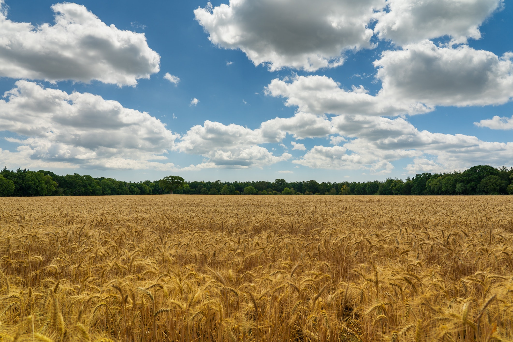
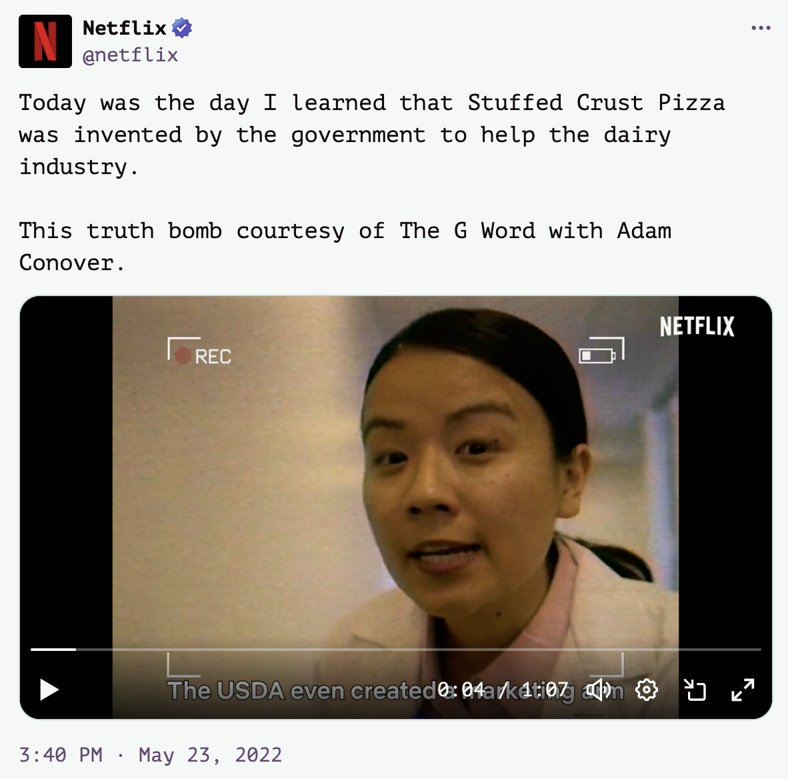

I had always wondered about the ubiquity of unhealthy food in the US and the blatant absence of fresh fruits and vegetables. Why are supermarkets full of unhealthy chips, why does bread have corn syrup, and why do berries cost $9.99 and berries snacks cost $1.99!?
The answer might be misaligned incentives. You see, the farmers in the Great Depression-era were poor and helpless; had a regular tryst with droughts like every other country’s farmers. And most Americans were farmers. So, poor and vulnerable. The US government supported them with three initiatives. First, subsidies. The USDA found some easy to grow crops like wheat and corn, and helped farmers economically to develop them.

Amazing help! The farm output in US has nearly tripled since 1948.1 This actually brought the US out of malnutrition and even saved countries like India when we had regular droughts and famines in the 1960s and 70s.2 In fact, America is the largest agriculture exporter in the world!
Second, they also supported broad agriculture research, which helped create HYV seeds (but also Monsanto’s cancer-inducing chemicals).3
However, the farmers clearly say that the chemical is not going anywhere.4
Mr. Bensend has been using that product, Roundup, on his 5,000 acres for 40 years, but he said that those blockbuster awards would not alter his farm practices one whit. Neither would the 20,000 lawsuits still pending.
“Roundup is still a fabulous tool,” said Mr. Bensend, who grows corn, soybeans and alfalfa. He relies on Roundup’s key ingredient — glyphosate — to easily kill weeds, helping increase his yields and reduce his costs.
Third, which I don’t have much to talk about, was buying surplus produce from farmers.
Today, the farmers are neither poor nor helpless. Less than 1% of Americans are farmers but the subsidies are still in place.5 It doesn’t look like they’re going anywhere.
Almost half of the subsidies go to the top-7 largest farm corporations in the US.
When you subsidise something, you get a lot of it.
In the 1990s, the USDA was tasked to create a food pyramid that would be printed in kids’ textbooks. What better way to tell them to be healthy? Unfortunately, the fantastic initiative was hijacked by lobbyists. The proportion of fruits and vegetables was reduced significantly to give space to grains and meat, according to Lusie Light, former USDA Director of Dietary Guidance and Nutrition Education Research.6
Where we, the USDA nutritionists, called for a base of 5-9 servings of fresh fruits and vegetables a day, it was replaced with a paltry 2-3 servings (changed to 5-7 servings a couple of years later because an anti-cancer campaign by another government agency, the National Cancer Institute, forced the USDA to adopt the higher standard). Our recommendation of 3-4 daily servings of whole-grain breads and cereals was changed to a whopping 6-11 servings forming the base of the Food Pyramid as a concession to the processed wheat and corn industries.
Moreover, my nutritionist group had placed baked goods made with white flour — including crackers, sweets and other low-nutrient foods laden with sugars and fats — at the peak of the pyramid, recommending that they be eaten sparingly. To our alarm, in the “revised” Food Guide, they were now made part of the Pyramid’s base. And, in yet one more assault on dietary logic, changes were made to the wording of the dietary guidelines from “eat less” to “avoid too much,” giving a nod to the processed-food industry interests by not limiting highly profitable “fun foods” (junk foods by any other name) that might affect the bottom line of food companies.
USDA made a marketing division to work with fast food companies (among others) to support them. The dairy industry wanted a piece too. Soon, there was cheese everywhere. Everywhere.
But how much can you plaster a pizza with cheese? It’s already dipping. When they couldn’t find more places to put cheese, the US government invented the cheese-filled crust.7

See this Tweet by Netflix for a dramatized clip.
Today, unlike other corners of fast food industry, pizza isn’t considered as unhealthy when it actually is. In fact, the US government spends millions to get people to eat more pizza.8

For the first few months I was in the US, I loved easy and accessible fast food. But soon after, I realised changes in my body. I was lazier in general and felt lethargic. Since then, I started cooking more often and I do notice changes in my energy levels. The vegetables here aren’t as delicious as in India — ask an Indian about mangoes — but at least that’s better than the fast food junk that makes every two out of three Americans fat.9
When the government makes the choices, we have to wonder if the options benefit us or someone else. In this case, it clearly doesn’t help us. As someone who likes vegetables and fruits, and would prefer to be healthy, can we do something?
I was actually inspired to write this blog after watching Adam Conover’s Netflix documentary series (produced by former president Barak Obama). It’s an amazing series, do watch it if you can.
A Look at Agricultural Productivity Growth in the United States, 1948–2017. (2020, March 5). USDA. https://www.usda.gov/media/blog/2020/03/05/look-agricultural-productivity-growth-united-states-1948-2017↩︎
I first learnt about this in my development economics class. We regularly requested US help for food grains. When HYV seeds became popular, this stopped but it wasn’t until 2000s that we became self-sufficient.
The New York Times (1974, September 3). INDIA REQUESTING FOOD AID FROM U.S. The New York Times. https://www.nytimes.com/1974/09/03/archives/india-requesting-food-aid-from-us-seeks-emergency-help-but-shuns-a.html↩︎
The World According To Monsanto is an amazing documentary recalling the practices of Monsanto and how it hurt us and farmers.↩︎
Cohen, Patricia. “Roundup Weedkiller Is Blamed for Cancers, but Farmers Say It’s Not Going Away (Published 2019).” The New York Times, 20 Sept. 2019, https://www.nytimes.com/2019/09/20/business/bayer-roundup.html.↩︎
In international discussions, the US government regularly points out that developing countries like India reduce the number of subsidies given to farmers. But seriously? Most farmers in India are small — like US farmers in the Great Depression-era — and they need it.↩︎
A Fatally Flawed Food Guide by Luise Light. http://www.whale.to/a/light.html↩︎
Rainey, Clint. “The Mad Cheese Scientists Fighting to Save the Dairy Industry.” Bloomberg.com, Bloomberg, https://www.bloomberg.com/news/features/2017-07-19/the-mad-cheese-scientists-fighting-to-save-the-dairy-industry#xj4y7vzkg.↩︎
Plumer, B. (2021, November 25). How the U.S. government spends millions to get people to eat more pizza. The Washington Post. Retrieved June 5, 2022, from https://www.washingtonpost.com/news/wonk/wp/2014/02/10/13-percent-of-americans-are-eating-pizza-on-any-given-day/↩︎
Sifferlin, A. (2015, June 22). More Than Two Thirds of Americans Are Overweight or Obese. Time. Retrieved June 5, 2022, from https://time.com/3929990/americans-overweight-obese/↩︎